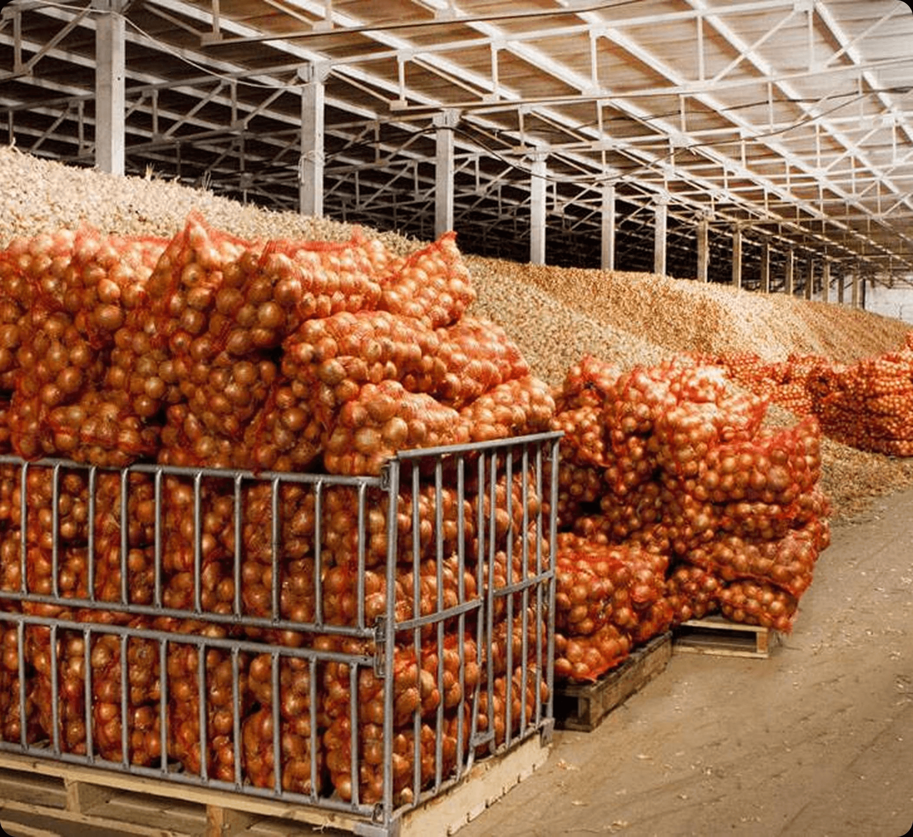

<section class="buildings" aria-labelledby="buildings-title">
<section class="buildings__agro" aria-labelledby="buildings-agro-title">
  <div class="buildings__agro-inner">
    <div class="buildings__agro-content">
      <div class="buildings__agro-heading">
        <p class="buildings__agro-category">Сельское хозяйство</p>
        <h2 class="buildings__agro-title" id="buildings-agro-title">Быстровозводимые агрокомплексы</h2>
      </div>
      <p class="buildings__agro-description">Cистема считает металлоемкость каркаса на базе 3 базовых строительных норм: 1- Росс. нормы (СНИПы), 2 - ЕВРОКОД и 3 - Американские нормы</p>
      <div class="buildings__agro-actions">
        <a class="btn secondary-btn buildings__agro-action" href="#/contacts">Рассчитать онлайн</a>
        <a class="btn main-btn buildings__agro-action" href="#/contacts">Запросить расчет</a>
      </div>
    </div>
    
    <nav class="buildings__agro-tabs" aria-label="Разделы агрокомплексов">
      <a class="buildings__agro-tab is-active" href="#buildings-agro-description" aria-current="page">Описание</a>
      <a class="buildings__agro-tab" href="#buildings-agro-specifications">Характеристики</a>
      <a class="buildings__agro-tab" href="#buildings-agro-benefits">Почему PK Vesta</a>
      <a class="buildings__agro-tab" href="#buildings-agro-comparison">Сравнение</a>
      <a class="buildings__agro-tab" href="#buildings-agro-prices">Цены</a>
      <a class="buildings__agro-tab" href="#buildings-agro-faq">Вопросы</a>
    </nav>
  </div>
</section>

</section>
